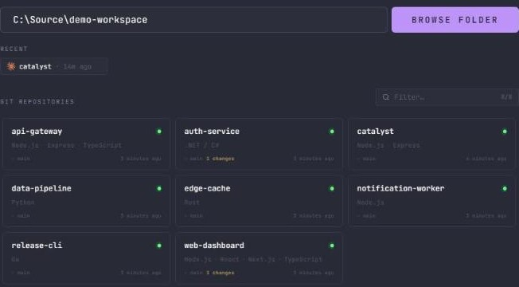
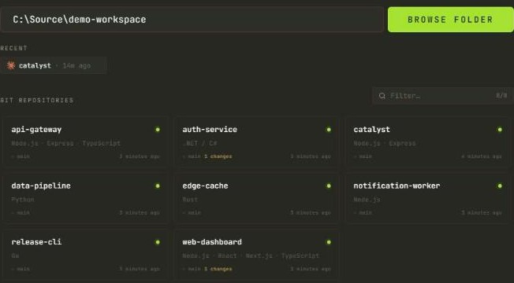
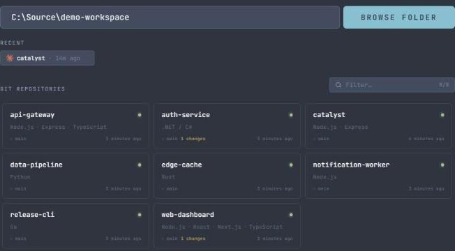
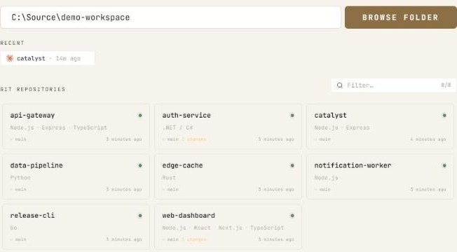
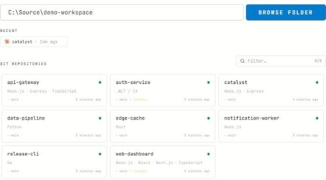
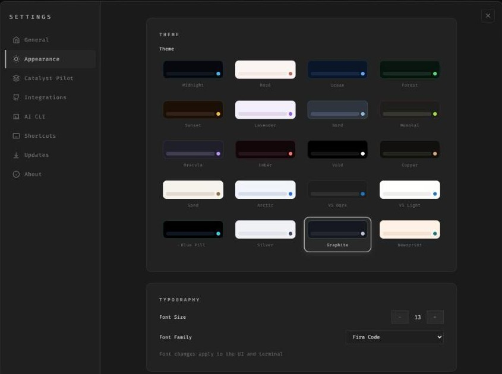

Many minds · One workspace · You're in command
Run every coding agent in one window.
Catalyst is a desktop workspace for Claude Code, Codex and Gemini CLI. Point it at the folder your repositories live in, pick a repo, pick an agent — and get a real terminal running the real CLI, with the branch, the diff and the work item right beside it.
A catalyst lowers the energy a reaction needs to get going, and comes out of it unchanged. The work in the middle is still yours — Catalyst just takes out the part that was never the work: hunting for the right window, re-typing the same path, losing your place between one agent and the next.

Choose AI
Pick a repo, pick an agent.
Selecting a repository shows you what you're walking into before you start: the branch, whether the tree is clean, how many branches and open PRs it has, and how recent the commits are.
- Claude Code, Codex and Gemini CLI, detected on your PATH
- Stack read from the repo — Node, .NET, Python, Rust, Go, React
- Optional worktree isolation, so your main checkout stays untouched

Session
Real terminals, not a chat box.
Catalyst doesn't wrap or re-implement any AI. It spawns the actual CLI in a pseudo-terminal and bridges it to a full xterm.js terminal, so everything the tool can do, it still does — prompts, slash commands, permission dialogs, colour and all.
- One tab per session, up to eight, plus inner split terminals
- Paste an image straight into the terminal
- Branch, diff and changed files in the panel beside it
- Pull, push and PR without leaving the session

Appearance
Twenty themes, light and dark.
Pick the one you can look at all day. Each theme retints the whole window — sidebar, cards, terminal and status bar together — so nothing is left on the old palette. Font family and size are yours to set too.






Settings
Set up once, on your machine.
Catalyst runs entirely on localhost. Your code never leaves the machine, and access tokens go to the OS credential store — Windows Credential Manager or the macOS Keychain — not to a config file.
- One root folder, scanned for git repositories
- Azure DevOps work items: fetch a task, start it, set it in progress
- Install a missing CLI from inside the app
- Reset wipes cached data and both tokens in one action

Updates
It keeps itself current.
Catalyst checks GitHub Releases when it starts. When there's a newer build it offers it, and installs it when you say so.
Every release is signed, and the app verifies that signature before it installs anything. Settings → Updates shows the installed version and checks again whenever you ask.

Install
Get Catalyst.
Windows
Run the installer
Download Catalyst_<version>_x64-setup.exe from the
latest release and run it. It installs for the current user, so it
doesn't ask for an administrator.
macOS · Apple Silicon
Open the disk image
Download the .dmg and drag Catalyst to Applications. The
build isn't notarized yet, so clear the quarantine flag once:
xattr -dr com.apple.quarantine \
/Applications/Catalyst.appYou'll also need: git on your PATH, and at least one agent CLI — Catalyst can install a missing one for you. Node.js ships inside the app, so there's nothing else to set up.